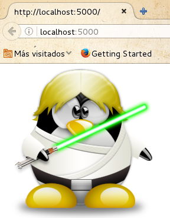

Contenido estático¶
Nuestra página web necesita tener contenido estático: hoja de estilo, ficheros java script, imágenes, documentos pdf, etc. Para acceder a eelos vamos a utilizar la función url_for.
¿Dónde guardamos el contenido estático?Permalink Dentro de nuestro directorio aplicacion vamos a crear un directorio llamado static, donde podemos crear la estructura de directorios adecuada para guardas nuestro contenido estático. Por ejemplo para guardar el CSS, el java script y las imágenes podríamos crear una estrucutra como la siguiente:
aplicacion
static
css
js
img
Acceder al contenido estático ¶
Por ejemplo:
url_for('static', filename='css/style.css')
Otro ejemplo:
url_for('static', filename='img/tux.png')
Mostrar una imagen¶
@app.route('/')
def inicio():
return '<img src="'+url_for('static', filename='img/tux.png')+'"/>'

Código ejemplo de esta unidad Código